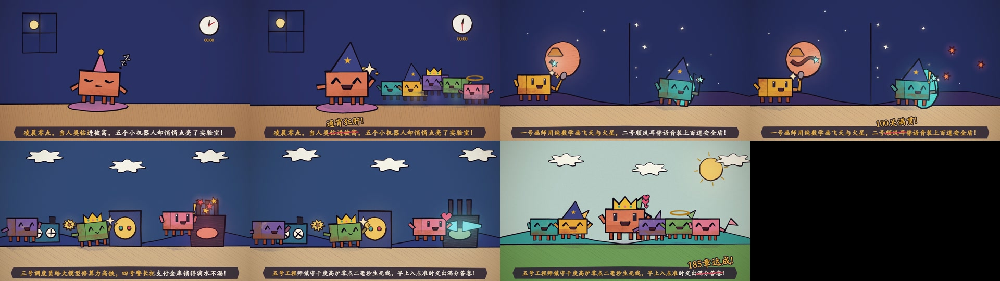

🎨 Clawd Watercolor Cartoon Explainer Theater Opus 5.5 Painted-Animation · 16:9 landscape viewing
Beyond slide recordings and portrait templates: p5.brush watercolor washes, 8Hz hand-drawn ink jitter, character-driven storyboards and cheerful xylophone narration
EP00 · Midnight in AI Miniature Land: Five Overnight Adventures (Overview)
🎬 Hand-drawn screenplay (4-Shot Cartoon Storyboard)
- • Shot A: At 00:00, the clock strikes midnight. Clawd, the snoring orange block in a nightcap, dons a wizard hat and summons a colorful AI team!
- • Shot B: Split screen: a yellow figure laser-carves MOLA Martian canyons (Stage 196); a cyan figure deflects ultrasonic arrows with a double light shield (Stage 100)!
- • Shot C: Three workshops: a purple figure dispatches 256 compute trains, a green figure locks a nine-nines vault, and a pink figure tames a 1650℃ furnace with a 0.2ms nitrogen shield!
- • Shot D: At 08:00 sunrise, six crowned figures cheer and jump on a grassy hill: an overnight research grand slam!
🖼️ 8-frame watercolor storyboard contact sheet
